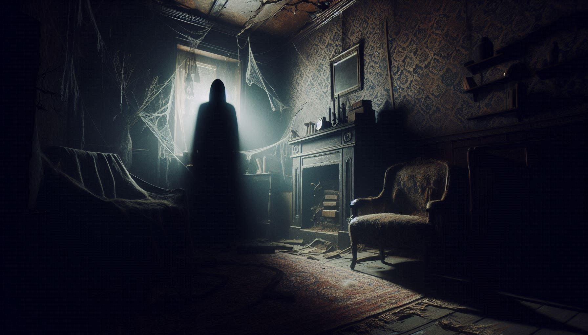

WHISPERS FROM THE DARKNESS

Science-inu explain cheyyan kazhiyatha karyangale aanu Paranormal Activity ennu vilikkunnath. Ghost sightings, poltergeists, and unexplained sounds ellam ithil pedum.
Chila scientific theories ghosts-ine explain cheyyan try cheyyunnundu:
| THEORY | DESCRIPTION |
|---|---|
| Stone Tape Theory | Buildings and rocks emotional energy 'record' cheythu veykkunnu, athu pinne play aavunnu. |
| Infrasound | Low-frequency sounds (19Hz) manushyarkku bhayam and hallucinations undakkunnu. |
| EVP | Electronic devices-il kelkkunna manushya shabdangal (Electronic Voice Phenomenon). |

World-ile ettavum kooduthal activity record cheythittulla sthalangal:
• Bhangarh Fort (India): ASI (Archaeological Survey of India) official aayi suryan asthamichal ivide entry banned aakkiyittundu.
• Aokigahara (Japan): "Suicide Forest" ennu ariyapedunnu. Ivide pala 'Yurei' (ghosts) sightings-um report cheyyunnundu.
• The Stanley Hotel (USA): Famous writer Stephen King-inu "The Shining" ezhuthan inspiration kittiye haunted hotel.
Paranormal investigators ghosts-ine main aayi 3 aayi thirikkunnu:
Ningalude aduthu oru paranormal presence undenkil kaanunna signs:
👉 Sudden Cold Spots (temp kurayuka)
👉 Unexplained smells (flowers, perfume, or bad odors)
👉 Animal reactions (നായ്ക്കൾ വെറുതെ കുരയ്ക്കുകയോ ഭയപ്പെടുകയോ ചെയ്യുക)
👉 Electronic interference (Phone/TV glitch aavuka)
Paranormal reality aano atho brain-inte thonnal aano? Oru karyam urappanu—world-ile 70% aalukalum avarude life-il explain cheyyan kazhiyatha oru mystery enkilum anubhavichavar aanu. Chilappol avar nammude aduthu thanne undaavaam... nammal kaanunnilla ennu mathram. 😌